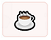
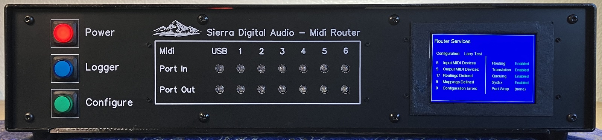
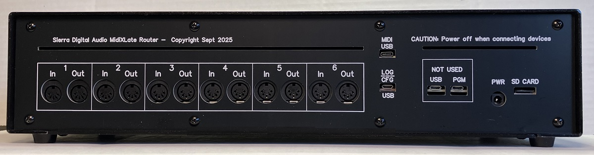
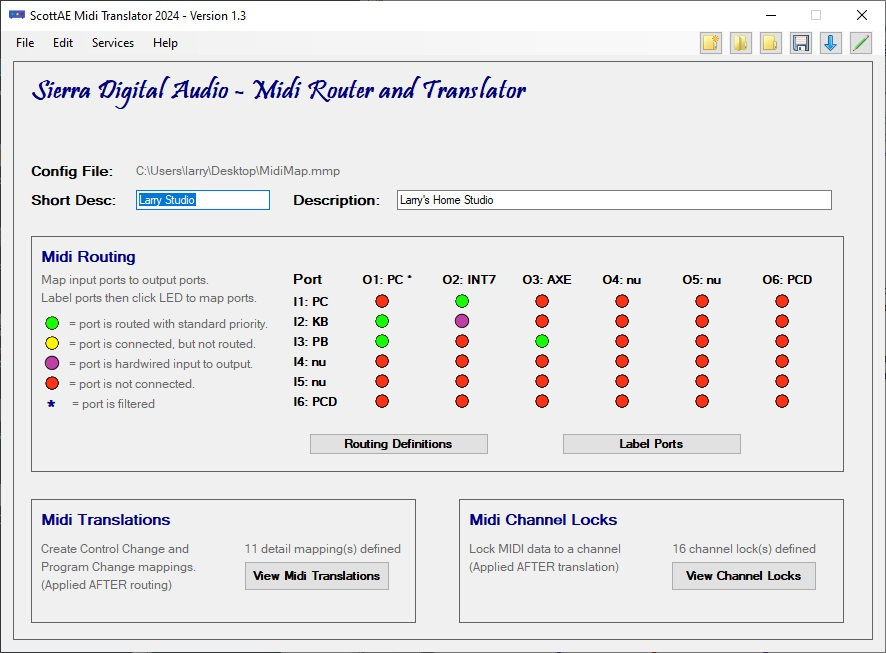
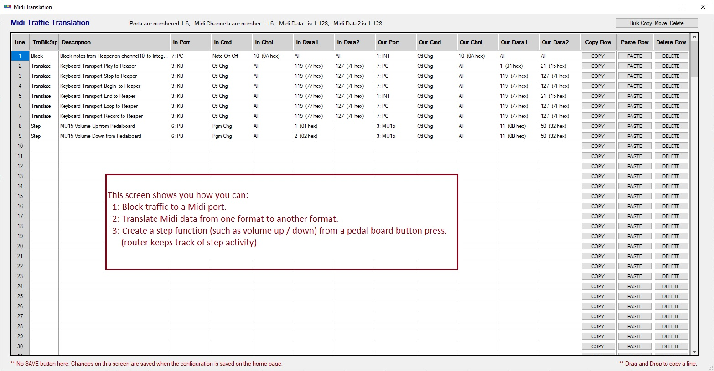
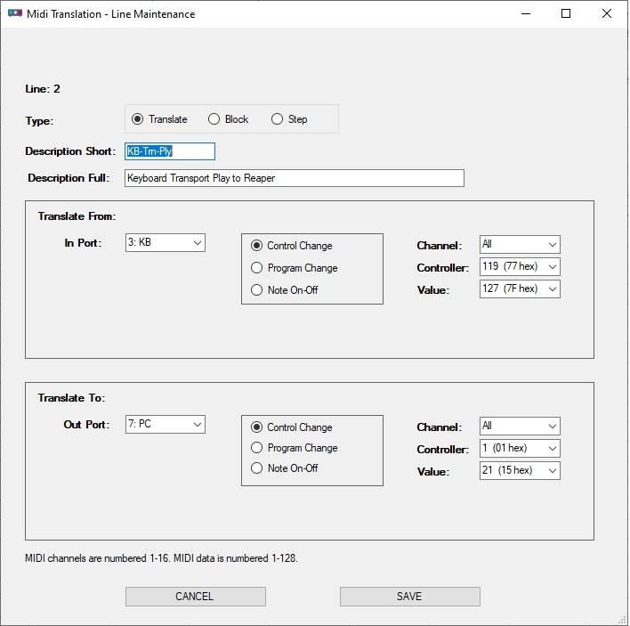
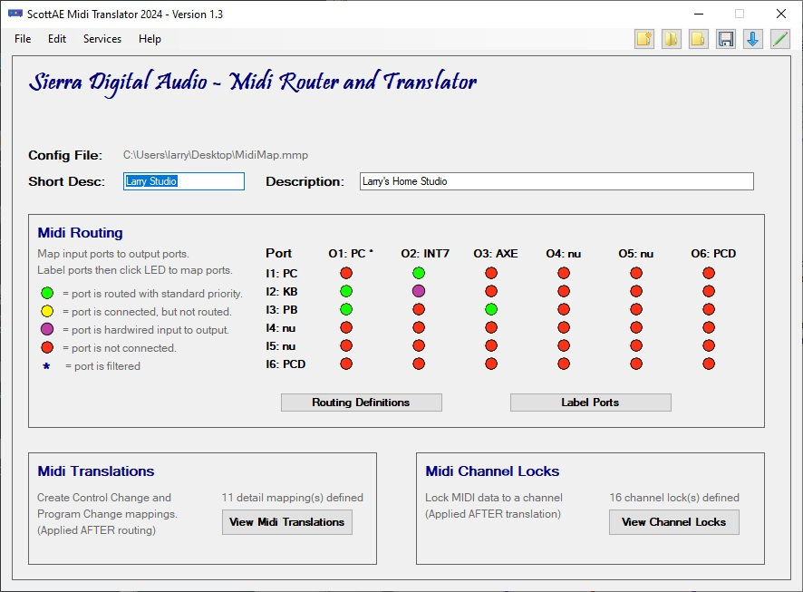
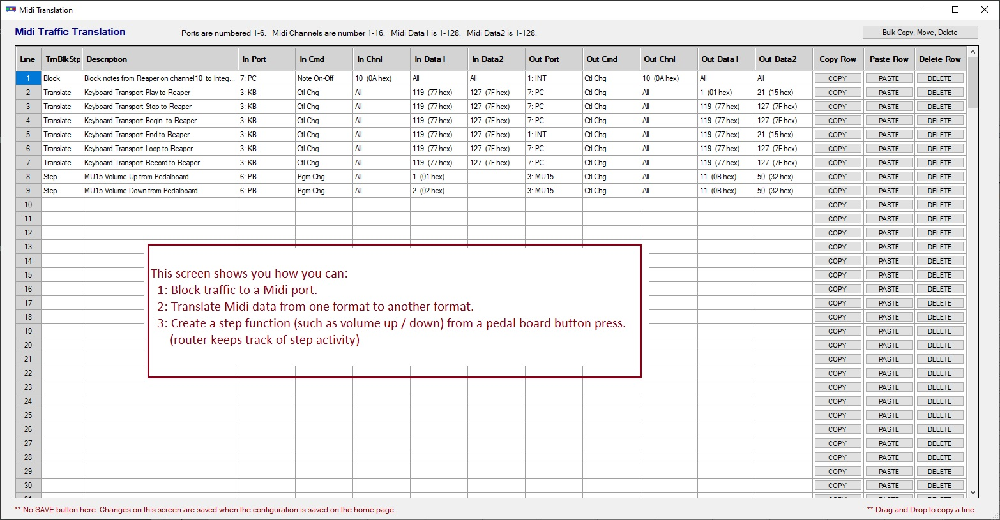
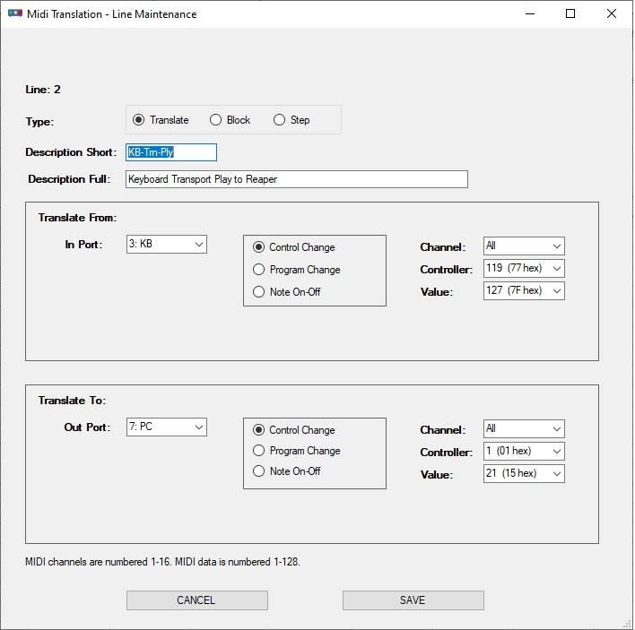

|

|
If you find something useful,
A coffee is very appreciated!
|

|
- Midi System Designs
- Embedded Systems Programming
- Mechanical CAD and 3D Printing
- Custom High Power PC Builds
|
|
|
|
|
MidiXLate Midi Router
Midi routing is the process of transmitting and receiving music data packets, (digitally encoded music notes and control messages)
from one musical device (ex: keyboard) to another musical device (ex: PC recording software).
Typically, Midi routing is accomplished by connecting all Midi devices to a Midi 'hub' which 'broadcasts' ALL Midi data
received at the hub to ALL Midi devices connected to the hub. This hub approach generates excessive Midi network traffic and makes each
Midi device configuration more complicated to setup.
A more strict definition of 'routing' is to define 'routing rules' that are downloaded to the router, which define how Midi data
received at the router will be routed (and optionally enhanced) to specific Midi device(s), not ALL midi devices!
This approach simplifies the midi network setup and optimizes Midi network performance by minimizing network Midi traffic,
thus minimizing network latency.
Click here for more router information, download links, pricing, and availability
|
Click on thumbnaild for more info. Click on picture to view larger image in new window.


 







|
|
|
MidiControl Software (for Windows 10 and above)
FREE!
Have you every wanted to send midi commands from your PC desktop?
For example, assume you have a Roland Integra 7 Sound Module and
you currently use the scroll wheel on the face of the Integra 7 to navigate to your favorite 50 sounds.
Rather than wearing out the Integra 7 navigation wheel, you can create a list of your favorite 50 sounds in MidiControl and
easily switch between the Integra 7 sounds with a simple press of a button on your PC. Much easier!
MidiControl is a FREE
Windows PC desktop utility used to organize the Midi commands you use in your music production. MidiControl is not designed
to play midi files, rather to catalog your Midi commands for use from your desktop. MidiControl provides ten bookmarks
(sections) for up to 2000 midi commands. Bookmarks can be arranged by Midi device, song, setlist,.....
MidiControl additional information (click here)
As a typical musician, you likely have many midi devices such as keyboards, guitar effects, drum machines, voice processors, and more.
You will find it helpful to catalog all of your Midi commands and optionally send those midi commands from your PC desktop to your midi devices
(the same Midi commands taht are sent from your Midi device.)
For example, assume you have a performance where every song requires a different keyboard patch, drum pathch, guitar patch, guitar volume, ....
With MidiControl, you can define groups (bookmarks) by song and list all the midi commands to setup each song.
Using your PC desktop, you can send the Midi commands to all your midi devices to setup for the next song (patch changes, controllers, ...)
Alternatively, as shown in the example screens, each bookmark can represent a muidi device and the midi commands used to control the device.
To start, connect all of your midi devices to your computer via a Midi hub (which you have likely already have done).
Next, download, install, and configure MidiControl (FREE!).
When configuring midi control, define (song or midi device) groups (bookmarks) for each midi device and/or song.
Next, setup the midi commands used by your midi gear (keyboards, pedal boards, effects processors,...)
As needed, press the 'Send' button next to each Midi command to control your midi hardware.
A script of midi commands is being considered for the next release.
You now have a simple means to control all of your Midi devices from your PC!
|
|
New features will be added as MidiControl evolves. If you have a particular feature you would like added, please
email us.
|
|
MidiOrganize Software (for Windows 10 and above)
FREE!
MidiOrganize provides a FREE and simple means to organize your Midi instrument (drum, bass, piano,....) loops and
optimize the performance and flexibility of your DAW (Digital Analog Workstation, such as ProTools, Reaper, Cubase,...) mixes!
Think of MidiOrganize as a PC based Midi librarian. You can catalog your Midi loops by instrument, by song, by set list, or any other
method you require. To use Midi loops inside your DAW, simply drag and drop the Midi loop from MidiOrganize into your DAW Midi track.
Optionally, there is a 'preview' feature that allows you to play the Midi loop isnide MidiOrganize (Windows Media Player plugin)
before adding to your DAW project.
A Cost and Performance Alternative to VSTs (click here)
VST's are virtual instruments that run inside you DAW. VSTs often provide screens to manage and shape the VST's generated sound.
The key takeaway is the VST creates the sound (tone) of the instrument inside your DAW.
MidiOrganize is purposely not a VST. It is designed to work outside your DAW, with high end sound modules, such as the
Roland Integra 7 SuperNatual Sound Module or the more affordable
Yamaha MU15 Tone Generator.
For maximum flexibility, you can continue build your DAW project using VSTs, but when performing or building a final mix,
you may opt to change your VST tracks to send the Midi data (not to the VST), but rather the external Midi sound module such as the
Roland Integra 7 SuperNatual Sound Module. The sound quality of the Roland Integra 7 SuperNatual Sound Module must be experienced to believe!
MidiOrganize follows the 'drill down' format of the most popular drum VSTs.
If you understand the drilldown structure of the most common drum VSTs, MidiOrganize will feel very natural.
Assume you currently use one of the many popular Drum VSTs (which I dare not menttion here).
Most drum VSTs typically are very expensive, must be licensed, require licensing software to run on your PC,
require your PC to be connected to the internet when used, and (the most irritating issue) place a heavy burden on the CPU
introducing latency and popping in your final mix. This VST 'burden' significantly drags down the processing power of you CPU
slowing EVERYTHING running on your PC!
MidiOrganize keeps your PC and DAW processing power requirements to a minimum by the eliminating the heavy weight of the VST from the DAW.
For example: In the DAW Midi drum track, rather than routing the drum Midi data to your VST, route the drum Midi data to your external Yamaha MU15,
by opening the tack output dialog box and rerouting the drum data from the VST to the external Midi Yamaha MU15).
(see the thumbnail image below)
My Personal Use Case (click here)
My Windows 10 music PC is music optimized with 32 gig memory, 3 x 1TB M.2 gumstick drives, Intel 7 CPU, and Reaper.
I typically start to see performance degradation after only loading a few drum VSTs.
VSTs do have benefits and conveniences, but I prefer to limit my VST usage to optimize my Reaper performance.
It is an easy and cleanerr option to drag and drop drum patches from MidiOrganize into Reaper Midi drum tracks.
Additionally, MidiOrganize has a patch preview feature allowing me to hear thee track before importing to Reaper.
Midi Organize is a stand alone PC application. During setup, you specify the directories of all your drum loops.
When working with your DAW (ProTools, Reaper, CuBase,...) you drag and drop MidiOrganize drum tracks into your DAW drum tack.
Unlike the VST which will play the drum track, set your drum track to route the drum midi to your external drum machine.
In my case, I have a
The Roland Integra 7 SuperNatual Sound Module for piano, bass, synths,... and a
Yamaha MU15 Tone Generator for drum patches.
The audio output of each device is an input on my mixer which is a auidio (not Midi) input to my Reaper DAW.
This is a key point: I route the Track 1 Midi data OUT of Reaper to the appropriate Midi tone generator.
I then record the AUDIO data INTO Reaper Track 2.
In my Reaper use case, the final audio mix is free of chop, pops, and dropouts due to heavy VST memory usage and the final mix quality
is noticably superior!
|
|
New features will be added as Scott MidiOrganize evolves. If you have a particular feature you would like added, please
email us.
|
|
|